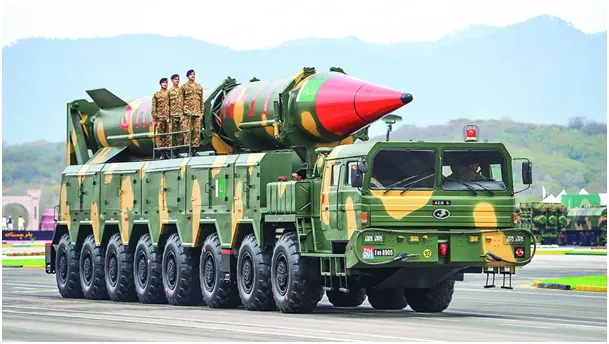
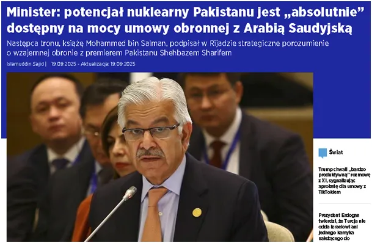

Nosił wilk razy kilka, aż przynieśli mu pod drzwi do Tel Awiwu bombę atomową.
Po ataku Izraela na negocjatorów z Hamasu w stolicy Kataru tydzień temu zwołano wyjątkowy szczyt, gdzie jednym głosem mówiły wszystkie państwa Islamskie. Poza krajami arabskimi, islam jest wyznaniem setek milionów nie Arabów: Persów (Iran), Turków, Azerów, mieszkańców Pakistanu, Indonezji, Malezji i wielu innych państw.

Dziś, już kilka dni po zakończeniu tego szczytu, dowiadujemy się, że doszło do porozumienia bez precedensu: Pakistan, bardzo bliski partner Chin, aplikujący do bloku BRIC podpisał z Arabią Saudyjską wzajemne gwarancje obronne. Pakistan jest jedynym Państwem Islamskim, które posiada broń jądrową. Arabia Saudyjska, niegdyś bliski partner USA i Izraela w handlu ropą i gazem jest ofiarą zakończenia zakazu eksportu ropy z USA przed ponad dekadą. Zalew, wcale nietaniej, amerykańskiej ropy, popartej wpływami politycznymi USA, bardzo ograniczył sprzedaż z Bliskiego Wschodu i Rosji. Wojna na Ukrainie jest de facto skutkiem tych napięć. Arabia Saudyjska związała się z blokiem BRICS licząc na zbyt swych bogactw w Chinach. Dziś, gdy agresja Izraela zagraża pokojowi w całym regionie, Saudom udało się włączyć do gry nuklearny Pakistan. Izrael oficjalnie nie posiada ok. 100 głowic jądrowych rozmieszczonych głównie na łodziach podwodnych i w silosach, ale też prawdopodobnie w swej bazie lotnictwa taktycznego w Rumunii.

Wygląda na to, że 19 września 2025 jest dniem przełomowym, gdy bezkarny Izrael został zaszachowany. Ważnym militarnym partnerem Pakistanu jest też Turcja, lokalna potęga militarna rywalizująca z Saudami, ale pozbawiona broni jądrowej. Z zaciekawieniem i optymizmem przyglądajmy się rozwojowi sytuacji, bo broń jądrowa jak na razie okazuje się najlepszym mechanizmem odstraszania. Pakistan przyznaje, że drzwi do jego potencjału nuklearnego są otwarte dla innych graczy w regionie. Innymi słowy Chiny położyły na stole jokera.
Źródło: aa-com-tr
Paweł Klimczewski